Después de mañana, the Mallorcan way.
A three-storey stone townhouse in a mountain village of the Serra de Tramuntana. Months of redesign, an architect, planning permission, Spanish timelines. And eventually, a house I'm deeply proud of.
Before & after
Room by room. Drag to compare.


Living room
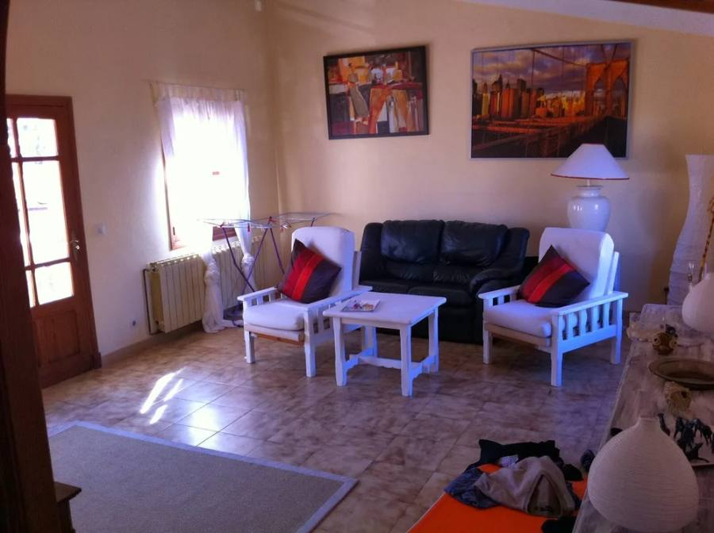
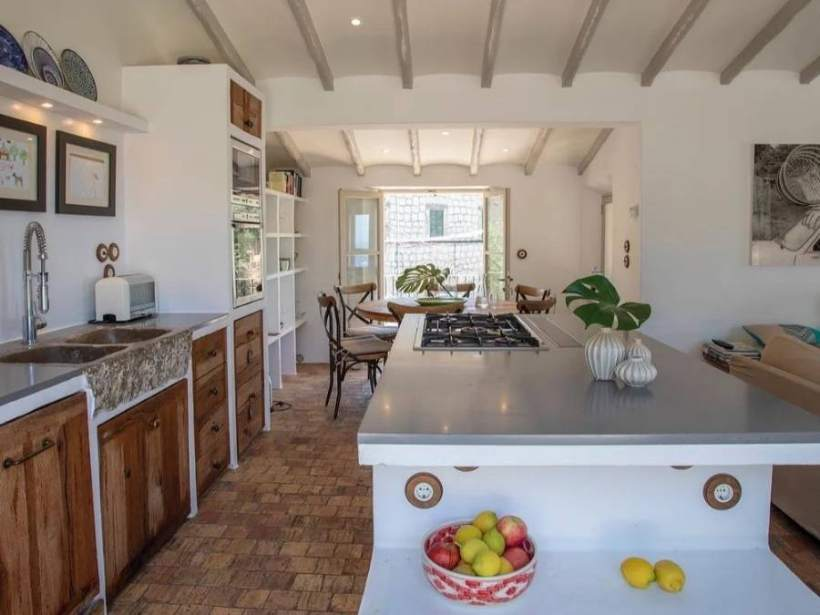
Kitchen
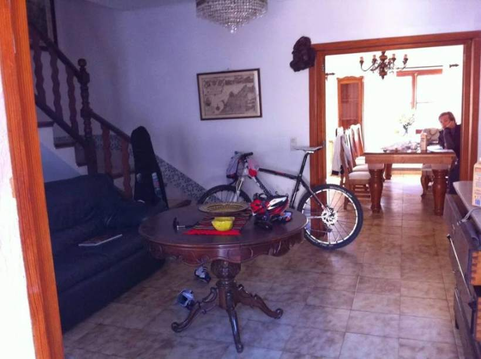

Bedroom
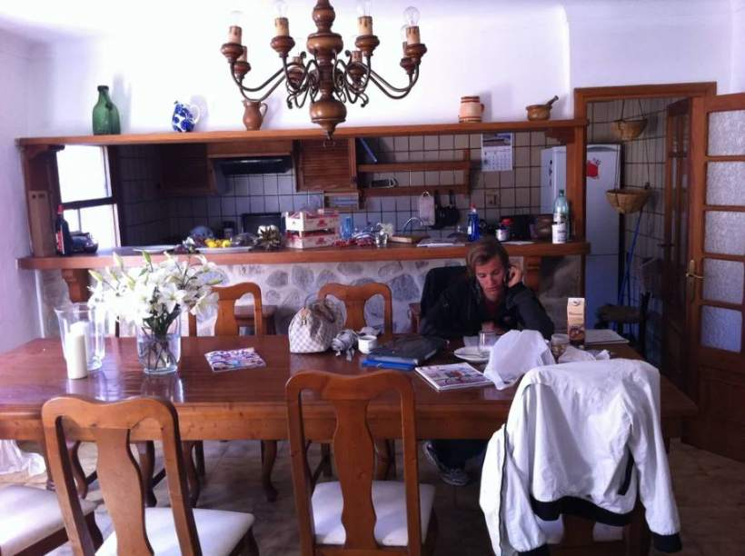
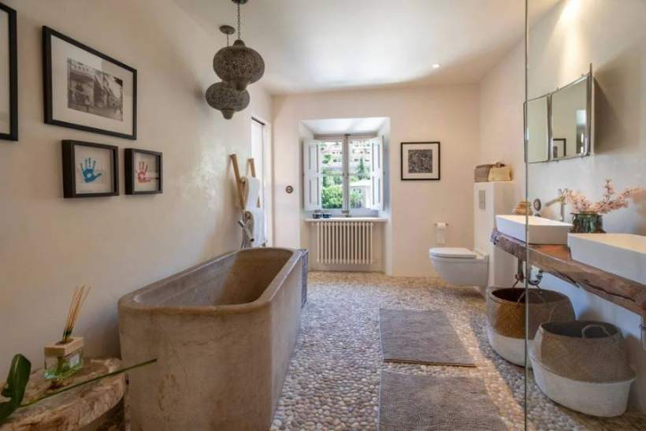
Bathroom
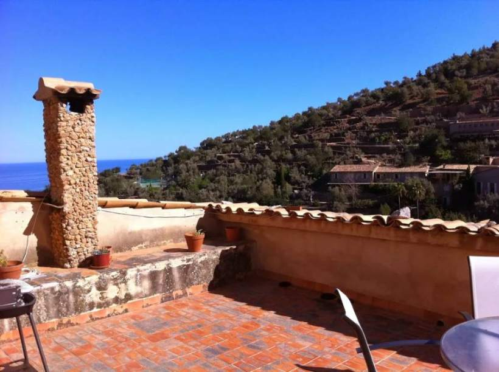
Terrace
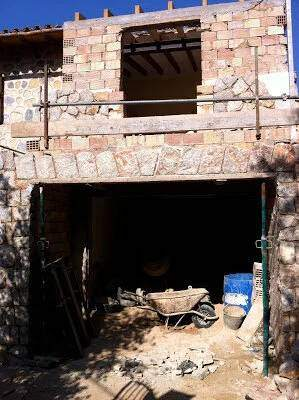

Outdoors
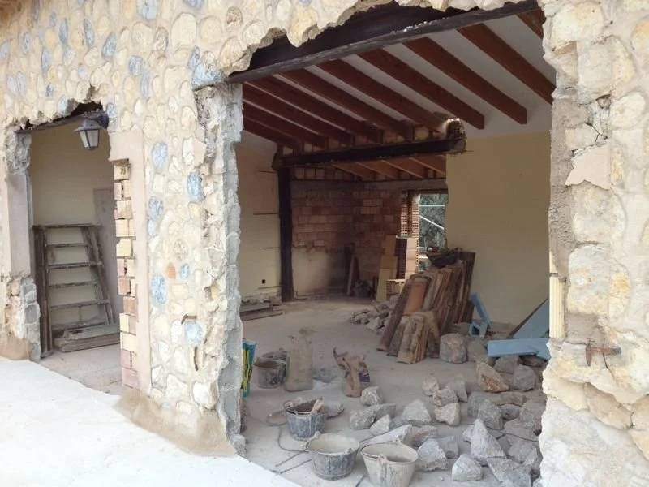
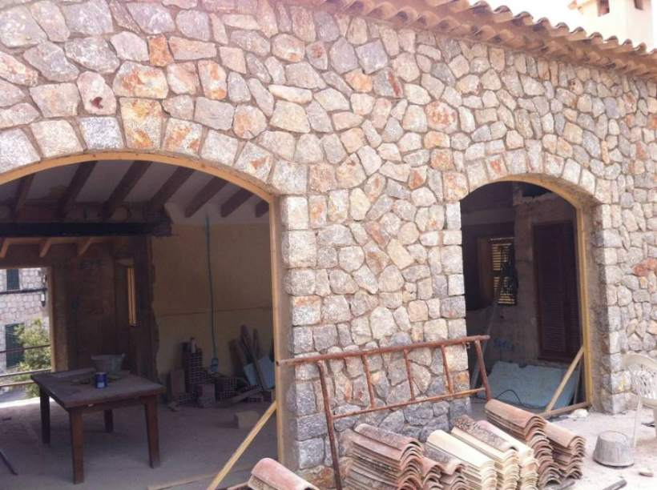
Arches
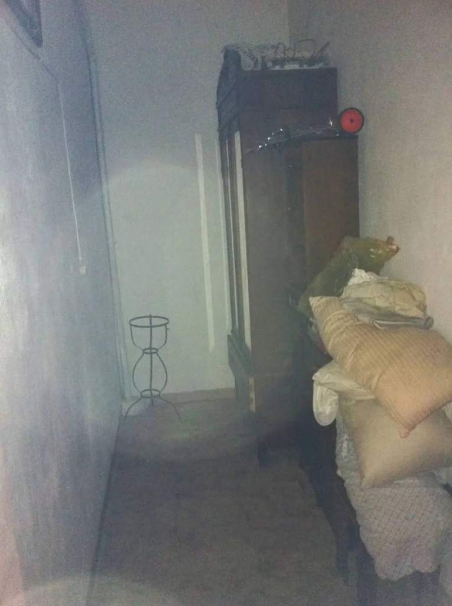
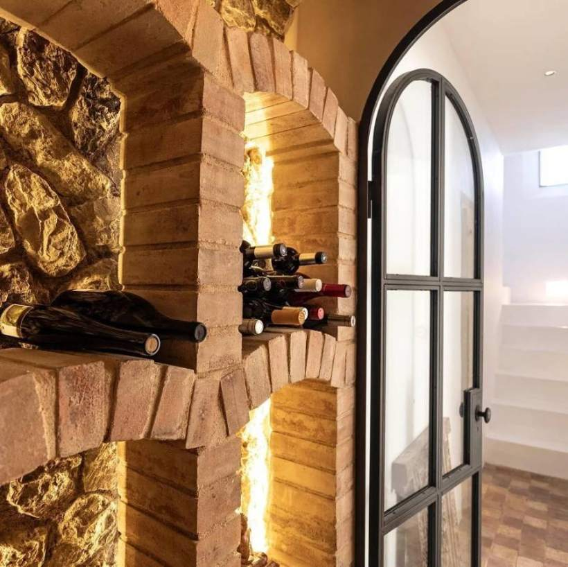
Wine cellar
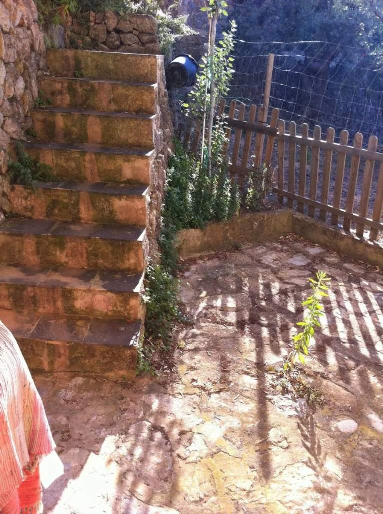
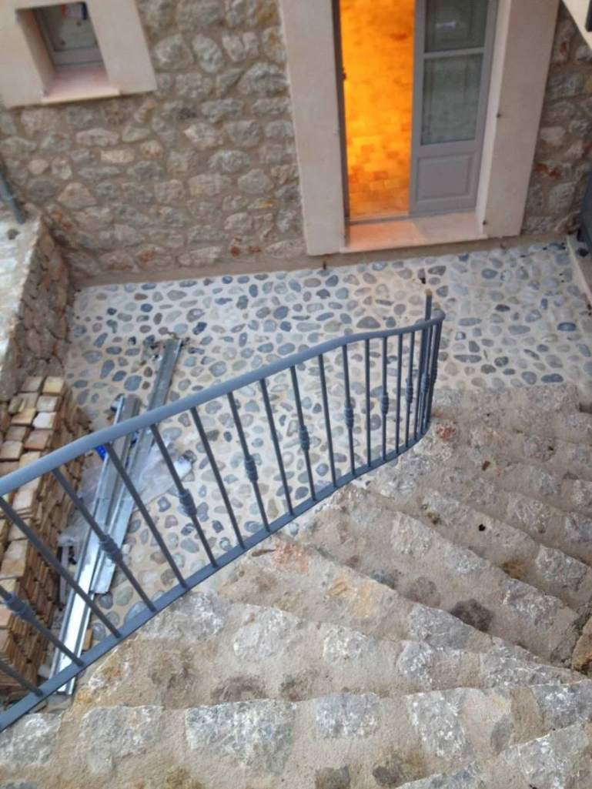
Staircase
The story
In Spain, everything is mañana. In Mallorca, it's after tomorrow.
The whole house was redesigned. Four openings were created in the living room, once a master bedroom with en-suite. Small windows were added for the new bathrooms, and the ground floor was rethought to give the garden its own entrance.
A window on the landing was opened up, so you can now cook while looking at the sea. An extension above the garage created a proper dining room and a balcony.
After stripping the house back to its shell, the painstaking part was making every opening, extension and socket exactly right. I spent days at scrapyards, designed every door, window and shutter, drew every detail of the kitchen and custom-designed the beds.
A little delay. A little over budget, because of the pool. Entirely worth it.
- Location
- Mallorcan village, Serra de Tramuntana
- Service
- Full renovation project management and interior design
- Scope
- Structural works, interiors, furniture, lighting, art direction
- Materials
- Exposed stone · Whitewashed plaster · Terracotta · Aged timber · Iron
- Atmosphere
- Rustic-modern · Calm · Mediterranean · Timeless